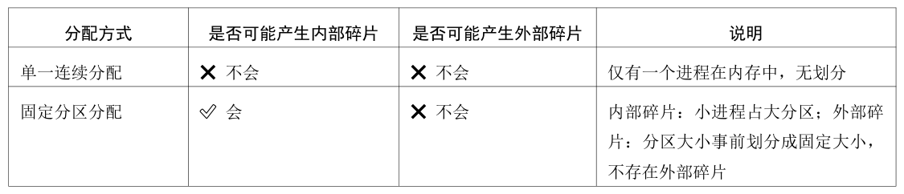
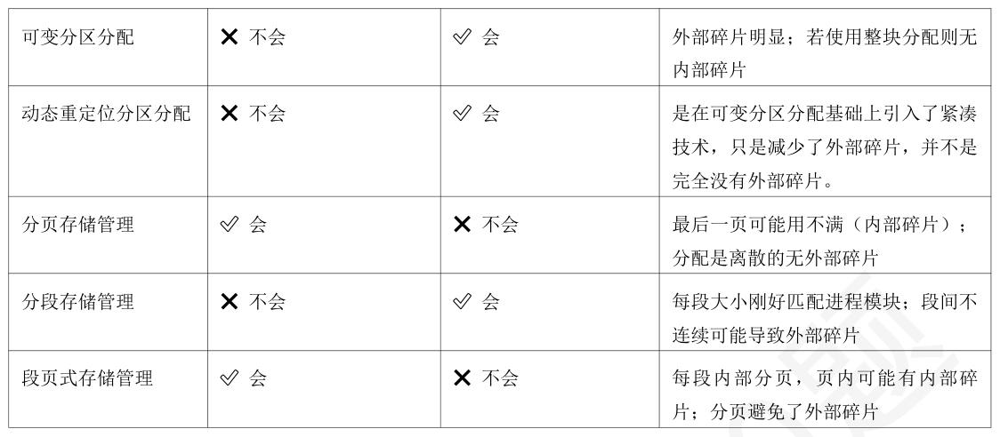
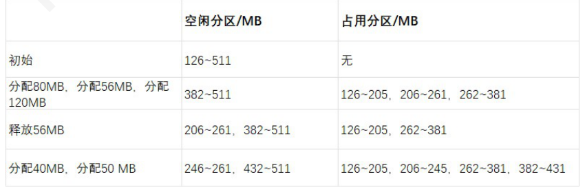
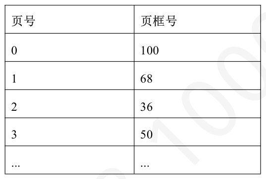

第 1 题
下列关于内存保护的说法中，正确的有（ ）
A． 仅Ⅰ B． 仅Ⅱ C． 仅Ⅰ、Ⅱ D． Ⅱ、Ⅲ 答案与解析 答案：B
Ⅰ错误，内存保护必须有硬件的支持才能有效实现。操作系统通过设置硬件机制 （如基址寄存器、限长寄存器、内存管理单元MMU 中的页表/段表机制以及相关的特权级别）来限制进程对内存的访问。软件（操作系统）负责管理这些硬件机制，但保护的执行和检查是由硬件在每次内存访问时进行的。如果完全依赖软件实现，效率会极低，且用户程序很容易绕过软件检查。 Ⅱ正确，内存保护可以采用两种方法：在CPU中设置一对上、下限寄存器，存放用户进程在主存中的下限和上限地址，每当CPU • 要访问一个地址时，分别和两个寄存器的值相比，判断有无越界。 •采用重定位寄存器(也称基地址寄存器)和界地址寄存器(也称限长寄存器)进行越界检查。 Ⅲ错误，加载重定位寄存器和界地址寄存器时必须使用特权指令，只有操作系统内核才可以加载这两个存储器。这种方案允许操作系统内核修改这两个寄存器的值，而不允许用户程序修改。综上所述，选B。
教材第 145 页 第 2 题
形成逻辑地址和物理地址的阶段分别为（ ）。
A． 编译，装入 B． 链接，装入 C． 编译，装入或程序运行时 D． 链接，装入或程序运行时 答案与解析 答案：D
形成逻辑地址的阶段是在完成链接步骤时。若源程序采用的装入方式为绝对装入或可重定位装入方式，则在装入阶段形成物理地址，若源程序采用的装入方式为动态运行时装入方式，则在程序运行时完成逻辑地址到物理地址的转换。综上，本题选择D 选项。
教材第 145 页 第 3 题
下列关于程序链接方式的叙述中，错误的是（ ）
A． 静态链接是在程序运行之前，将所有目标模块及所需的库函数一次性链接成一个完整的装入模块，之后不再拆开。 B． 装入时动态链接允许目标模块在装入内存时才进行链接，这便于模块的修改、更新以及实现共享。 C． 运行时动态链接将某些模块的链接推迟到程序执行过程中真正需要调用它们时才进行，可以节省内存空间并加快程序启动速度。 D． 无论是静态链接还是动态链接，在链接完成后，目标模块中所有对外部符号的引用都已解析为绝对物理地址。 答案与解析 答案：D
A 正确，静态链接是在程序执行前，由链接器将编译后的目标模块与它们所需的库函数等链接成一个单一的可执行文件。这个可执行文件包含了所有需要运行的代码和数据，在运行时其内部结构不再改变B 正确，装入时动态链接是将链接过程推迟到程序装入内存时进行。这种方式下，目标模块是分开存放的，因此当某个模块需要更新或修改时，只需替换该模块即可，无需重新链接整个程序。同时，多个应用程序可以共享内存中同一目标模块的单个副本。 C 正确，运行时动态链接是最灵活的链接方式，它只在程序运行过程中，当某个模块首次被调用时，才将其装入内存并进行链接。这种方式可以避免装入那些在本次执行中根本不会用到的模块，从而节省了内存开销，并且因为初始装入的模块较少，也加快了程序的启动速度。 D 错误，对于静态链接，链接完成后形成的是一个装入模块（可执行文件）。在这个模块中，对外部符号的引用会被解析为相对地址（相对于装入模块的起始地址）或者需要重定位的地址。最终的绝对物理地址是在程序被装入内存时，根据装入方式（如绝对装入、可重定位装入、动态运行时装入）才确定的。对于动态链接（包括装入时动态链接和运行时动态链接），链接本身就是在装入或运行时才进行的，其地址的解析和绑定同样会推迟，并且最终形成的地址也可能是逻辑地址（在动态运行时装入方式下），而不是立即转换为绝对物理地址。地址转换到物理地址是装入和运行时内存管理单元（MMU）的工作。综上所述，D 错误。链接过程主要是解决模块间的符号引用，并将它们组织成一个统一的逻辑地址空间，而不是直接解析为绝对物理地址。
教材第 145 页 第 4 题
当一个C 语言程序经过编译、链接后形成可执行文件，并在操作系统中加载运行时，其在内存中的映像通常会划分为若干个不同的区域。下列关于这些区域及其内容的叙述中，错误的是（）
A． 代码段通常存放程序的机器指令，该区域一般是只读的，以防止程序在运行过程中意外修改自身指令。 B． 数据段用于存放程序中已初始化的全局变量和静态变量。 C． PCB 对用户程序不可见。 D． 堆用于存放函数调用时的局部变量、函数参数和返回地址，其空间分配和释放遵循“先进后出”的原则。 答案与解析 答案：D
A 正确，代码段（也称文本段）包含了程序执行的机器指令。为了防止程序意外地或恶意地修改其自身的指令，该区域通常被设置为只读。 B 正确，数据段用于存储在程序编译时就已经确定了初始值的全局变量和静态变量。 C 正确，PCB 存放在操作系统内核区，对用户程序代码不可见。 D 错误，用于存放函数调用时的局部变量、函数参数和返回地址的内存区域是栈，而不是堆。堆是用于程序运行时动态分配内存的区域（例如，通过malloc()或new 操作符分配的内存）。堆内存的分配和释放由程序员控制，通常不遵循严格的先进后出或后进先出原则，而是根据程序的需要进行。
教材第 145 页 第 5 题
对于基于空闲分区链的动态分区存储管理方式：当进程运行完毕和释放内存时，系统应根据回收区的起始地址从空闲分区链中找到相应的插入位置，然后实施回收插入操作。下列处理方案中不正确的是（）。
A． 检查确认若回收区仅与插入位置前的空闲分区F1 相邻接，应将回收区与F1 合并。具体操作为修改表项F1 的分区大小 B． 检查确认若回收区仅与插入位置后的空闲分区F2 相邻接，应将回收区与F2 合并。具体操作为修改表项F2 的分区大小 C． 检查确认若回收区同时与插入位置前、后的空闲分区F1 和F2 相邻接，应将回收区与F1、F2合并。具体操作为修改表项的F1 分区大小，并删除表项F2 D． 检查确认若回收区与插入位置前、后的空闲分区F1 和F2 均不相邻接，应为回收区单独建立新表项，填写起始地址和大小，并插入到空闲分区链 答案与解析 答案：B
还要修改F2 分区的起始地址。
教材第 146 页 第 6 题
在下列存储管理方式中，会产生内部碎片的是（ ）。
A． 仅Ⅱ B． 仅Ⅲ、Ⅳ C． 仅Ⅰ、Ⅱ、Ⅲ D． 仅Ⅱ、Ⅲ、Ⅳ 答案与解析 答案：D
只要是固定的分配就会产生内部碎片，其余的都会产生外部碎片。如果固定和不固定同时存在(如段页式)，其物理本质还是固定的，解释如下：分段虚拟存储管理：每一段的长度都不一样(对应不固定)，所以会产生外部碎片。分页虚拟存储管理：每一页的长度都一样(对应固定)，所以会产生内部碎片。段页式分区管理：地址空间首先被分成若干个逻辑分段(这里的分段只是逻辑上的，而我们所说的碎片都是物理上真实存在的，所以是否有碎片还是要看每个段的存储方式，页才是物理单位)，每段都有自己的段号，然后再将每个段分成若干个固定的页。所以其仍然是固定分配，会产生内部碎片。固定式分区管理：很明显是固定的，会产生内部碎片。综上分析，本题选D 选项。
教材第 146 页 第 7 题
下列内存分配存储管理方式中，不会产生外部碎片的是（ ）
A． 动态重定位分区分配 B． 分页存储管理 C． 可变分区分配 D． 分段存储管理 答案与解析 答案：B
如下表所述注意：固定分区分配有解释说存在外部碎片，即如果出现较大的作业，剩余的小的固定分区无法装入，把这种小分区当作“外部碎片”。也有教材指出，外部碎片和内部碎片只存其一（不讨论单一连续分配）。个人认为固定分区分配没有外部碎片。


教材第 146 页 第 8 题
以下内存管理方式中，最适合采用动态链接的是（ ）
A． 单一连续分配管理方式 B． 分段存储管理方式 C． 固定分区管理方式 D． 分页存储管理方式 答案与解析 答案：B
动态链接：程序在运行时才将所需的外部模块（如库函数）装入内存并建立链接。这就要求内存管理方式具有：模块化（每个模块可独立加载），地址空间支持逻辑分段、支持按需装载、独立保护、重定位等。而分段存储管理方式，程序划分为多个“段”（代码段、数据段、库段），每段可以独立加载、链接，最适合动态链接。分页存储管理方式通常是静态链接，将用户空间链接成一个统一的逻辑地址空间，通过页表可离散的映射到内存中的也框中。
教材第 146 页 第 9 题
下列关于顺序分配算法的说法中，正确的是（ ）
A． 仅Ⅰ、Ⅱ B． 仅Ⅰ、Ⅲ C． 仅Ⅱ、Ⅲ D． 仅Ⅰ、Ⅱ、Ⅲ 答案与解析 答案：C
Ⅰ错误，首次适应算法中，空闲分区按地址递增的次序排序，系统每次分配第一个能满足大小的空闲分区。 Ⅱ正确，邻近适应算法（Next Fit）从上次查找结束的位置开始继续查找空闲分区。这种方式使得空闲分区的分布更加均匀，避免了首次适应算法中低地址部分被集中使用和切割，从而导致高地址部分保留大空闲区的情况。 Ⅲ正确，最坏适应算法（Worst Fit）总是选择最大的空闲分区进行分配。这样做的一个主要优点是，分配后剩余的空闲区通常也比较大，不容易产生过多难以利用的小碎片，这对于后续中、小作业的分配是有利的。 Ⅳ错误，最佳适应算法（Best Fit）虽然听起来“最佳”，但它倾向于选择与请求大小最接近的空闲分区，这会导致系统中留下大量非常小的、难以再利用的外部碎片。而且，为了找到“最佳”分区，它通常需要扫描整个空闲分区列表或对空闲区按大小排序，查找开销较大，因此其整体性能（包括空间利用率和查找效率）并非最优。综上所述，正确的说法是Ⅰ和Ⅲ，选C。
教材第 146 页 第 10 题
在采用伙伴系统（Buddy System）进行动态内存管理时，系统会按照特定规则对内存块进行分裂和合并。下列关于伙伴系统中“伙伴”概念的叙述中，错误的是（）
A． 伙伴是指由一个较大的空闲块分裂而成的两个大小相等的子块。 B． 只有当两个大小相同且物理地址连续的空闲块满足特定对齐条件时，它们才能被称为伙伴并进行合并。 C． 一个内存块的伙伴是唯一的，且可以通过简单的地址运算找到其伙伴的地址。 D． 在伙伴系统中，任意两个地址不相邻但大小相同的空闲内存块，若它们都源自同一个更大的初始空闲块，则它们互为伙伴。 答案与解析 答案：D
A 正确，当需要分配一个较小的内存块而当前没有合适大小的空闲块时，系统会找到一个更大的空闲块，并将其分裂成两个大小相等的子块，这两个子块互为伙伴。 B 正确，伙伴系统在回收内存块时，会检查其伙伴块是否也空闲。只有当两个块大小相同、物理地址连续，并且它们的起始地址满足特定的对齐约束时，它们才被认为是伙伴，可以合并成一个更大的块。 C 正确，由于伙伴块是由一个父块等分成两部分得到的，并且它们的地址具有特定的对齐关系，因此对于任何一个块，其伙伴块的地址是唯一确定的，并且可以通过简单的位运算（通常是异或操作）根据其自身的起始地址和大小计算出来。 D 错误，伙伴关系的核心在于它们是由同一个父块直接分裂而来的，并且物理地址相邻。仅仅大小相同，或者都源自同一个更大的初始空闲块（但经过多次不同的分裂和合并），并不足以使它们成为伙伴。例如，一个16KB 的块可以分裂成两个8KB 的块（它们是伙伴）；这两个8KB 的块又可以各自独立分裂成4KB 的块。其中一个8KB 分裂出的两个4KB 是伙伴，另一个8KB 分裂出的两个4KB 也是伙伴，但前一组的4KB 块与后一组的4KB 块（即使大小相同且都最终源自同一个16KB 块）之间不是伙伴关系，因为它们不是由同一个直接父块分裂而来且不相邻。
教材第 146 页 第 11 题
在（ ）中，每次分配时把既能满足要求又是最小的空闲区分配给进程。
A． 首次适应算法 B． 最坏适应算法 C． 最佳适应算法 D． 邻近适应算法 答案与解析 答案：C
最佳适应(Best Fit)算法：空闲分区按容量递增的次序排列。每次分配内存时，顺序查找到第一个能满足大小的空闲分区，即最小的空闲分区，分配给作业。
教材第 147 页 第 12 题
为了提高动态分区分配算法中查找空闲分区的效率，尤其是当系统较大、空闲分区数量较多时，可以采用基于索引搜索的分配算法。下列关于这类算法的叙述中，错误的是（）
A． 快速适应算法将空闲分区按常用大小进行分类，并为每类大小维护一个独立的空闲链表，分配时能快速找到合适大小的链表并取下第一块，但回收时合并空闲分区的算法可能较复杂。 B． 伙伴系统中，所有分区的（包括空闲和已分配的）大小均为2 的k 次幂，分配时若没有合适大小的空闲块，则会递归地将更大的空闲块分裂成“伙伴”块，直到找到合适的块。 C． 伙伴系统中，任意两个大小相同的空闲内存块，都可以互称为“伙伴”并进行合并。 D． 哈希算法通过将空闲分区大小作为关键字计算哈希值，定位到哈希表中的相应表项，该表项指向一个包含特定大小范围空闲分区的链表，以期实现快速查找。 答案与解析 答案：C
A 正确，快速适应算法的核心思想就是预先根据进程的常见需求大小将空闲分区分类管理，分配时直接从对应大小的链表中取用，查找效率高。但其缺点在于分区归还时，为了有效地合并可能产生的相邻小空闲块，算法会比较复杂。 B 正确，伙伴系统的特点是内存块的大小固定为2 的幂。分配时，如果找不到大小为2(i 的空闲块，就会去查找大小为2)(i+1)的空闲块，如果找到则将其分裂成两个大小为2(i 的“伙伴”块，一个用于分配，另一个加入2)i 的空闲链表。 C 错误，伙伴关系的核心在于它们是由同一个父块直接分裂而来的，并且物理地址相邻。仅仅大小相同并不足以使它们成为伙伴。 D 正确，哈希算法利用哈希函数将所需空闲分区的大小映射到哈希表的一个条目，该条目指向一个空闲分区链表，该链表中的空闲分区大小与所查找的大小相近，从而可以快速定位到合适的空闲分区。
教材第 147 页 第 13 题
下列存储管理方式中，可实现紧凑技术的存储管理方式为（ ）。
A． 动态重定位分区分配 B． 单一连续分配 C． 固定分区分配 D． 分页存储管理 答案与解析 答案：A
动态重定位分区分配可以在内存无足够大分区时移动内存中的程序使其互相连成一片，消除外部碎片以获得更大的内存分区，故A 正确。
教材第 147 页 第 14 题
某基于动态分区存储管理的计算机，其主存容量为512MB，操作系统占用低地址部分的126MB，用户区大小为386MB（初始为空），采用首次适配（First Fit）算法，分配和释放的顺序为：分配80MB，分配56MB，分配120MB，释放56MB，分配40MB，分配50 MB。此时主存中最大空闲分区的起始地址是（）
A． 126 B． 246 C． 382 D． 432 答案与解析 答案：D
此时空闲的最大分区是432~511。

教材第 147 页 第 15 题
某台计算机采用动态分区来分配内存，经过一段时间的运行后，内存中按地址从小到大存在100KB、450KB、250KB、200KB 和600KB 的空闲分区。分配指针现在指向地址起始点，继续运行还会有212KB、417KB、112KB 和426KB 的进程申请使用内存，则能够完全完成分配任务的算法是 （）。
A． 首次适应算法 B． 邻近适应算法 C． 最佳适应算法 D． 最坏适应算法 答案与解析 答案：C
按照题中的各种分配算法，分配结果如下表所示。只有最佳适应算法能够完全完成分配任务。 A 选项，首次适应算法：按地址顺序从头扫描，找到第一个满足的空闲区。 •分配212KB→450满足，分掉→剩238，剩余空闲分区：[100] [238] [250] [200] [600] 分配417KB→238不够，250不够，200不够，600满足→剩173，剩余空闲分区：[100] • [238] [250] [200] [173] •分配112KB→100不够，238满足→剩126，剩余空闲分区：[100] [126] [250] [200] [173] 分配426KB→100不够，126不够，250不够，200不够，173不够→❌失败 • B 选项，邻近适应算法：从上次分配成功的位置继续向后找（循环搜索）。 •分配212KB →从头开始，450分掉（剩238），指针停在238分配417KB →从238开始，250不够，200不够，600满足→剩173，指针停在173 • • 分配112KB →从173开始，不够→回到100、238 →238满足，剩126分配426KB →从126开始，250不够，200不够，173不够→❌失败 • C 选项，最佳适应算法：优先选择最小的能装下的空闲区，碎片最少。 • 分配212KB →最小满足的是250 →剩38，剩余空闲分区：[100] [450] [38] [200] [600] •分配417KB →最小满足的是450 →剩33，剩余空闲分区：[100] [33] [38] [200] [600] 分配112KB →最小满足的是200 →剩88，剩余空闲分区：[100] [33] [38] [88] [600] • • 分配426KB →满足的只有600 →剩174，剩余空闲分区：[100] [33] [38] [88] [174]→✅全部分配成功！ D 选项，最坏适应算法：优先选择最大的空闲区分配，产生大碎片。 • 分配212KB →最大是600 →剩388，剩余空闲分区：[100] [450] [250] [200] [388] •分配417KB →最大是450 →剩33，剩余空闲分区：[100] [33] [250] [200] [388] 分配112KB →最大是388 →剩276，剩余空闲分区：[100] [33] [250] [200] [276] • 分配426KB →最大是276 →❌失败 •
教材第 147 页 第 16 题
在采用动态分区分配的存储管理方式中，系统运行时可能会产生许多不连续的小空闲区（外部碎片）。为了解决这个问题并提高内存利用率，可以采用“紧凑”（Compaction）技术。下列关于紧凑技术及其与动态重定位的叙述中，错误的是（）
A． “紧凑”是指将内存中的所有作业向一端移动，使它们相邻接，从而将分散的小空闲区合并成一个大的连续空闲区。 B． 执行“紧凑”操作后，由于作业在内存中的物理位置发生了改变，因此必须对程序中所有地址进行修改才能保证程序正确执行。 C． 动态重定位是指在程序运行时，每次访问内存地址之前都由硬件将逻辑地址加上重定位寄存器中的值转换为物理地址。 D． 采用动态重定位分区分配方式，当内存进行“紧凑”后，只需修改相应作业的重定位寄存器的值，而无需修改作业内部的指令和数据地址。 答案与解析 答案：B
A 正确，这是对“紧凑”技术的基本描述。通过移动内存中的作业，可以将原本分散的多个外部碎片合并成一个或少数几个较大的连续空闲区，以便分配给新的或等待的作业。 B 错误，这句话描述的是在静态重定位或可重定位装入方式下进行紧凑会面临的问题。在这些方式下，程序中的地址在装入时或之前就已经转换（或部分转换）为物理地址。如果内存中的物理位置改变，这些地址就需要修改。然而，紧凑技术通常与动态重定位配合使用。在动态重定位下，程序内部使用的是逻辑地址，物理地址是在每次访存时通过重定位寄存器动态计算的。 C 正确，这是动态重定位的基本原理。程序在内存中时，其内部地址仍为逻辑地址（通常是相对于程序起点的地址）。CPU 执行时，硬件地址变换机构会自动将逻辑地址与重定位寄存器（存放程序在内存中的起始物理地址）中的内容相加，得到最终的物理地址。 D 正确，这是动态重定位配合紧凑技术的主要优点。由于程序内部使用的是逻辑地址，与物理位置无关，当作业因“紧凑”而在内存中移动后，操作系统只需要更新该作业在其进程控制块（PCB）中记录的内存起始地址，并将这个新的起始地址加载到重定位寄存器中即可。程序本身的指令和数据中包含的地址（逻辑地址）无需修改。
教材第 147 页 第 17 题
计算机系统按字节编址，采用可变分区分配存储管理方法，用空闲分区表管理空闲分区，分配内存采用首次适应算法，并将分区的高地址部分分配出去。内存低地址部分的200KB 由操作系统占据，用户区从200K 开始，大小为386KB，初始时为空。接下来一段时间里内存中进行了以下操作：进程A申请80KB，进程B 申请56KB，进程C 申请120KB，进程A 释放80KB 进程C 释放120KB，进程D申请156KB，进程E 申请81KB。问完成这些操作后内存中最小空闲块的起始地址为（ ）。
A． 200K B． 213K C． 450K D． 506K 答案与解析 答案：A
a.初始状态：操作系统占用：0K - 199K (200KB) • • 用户区空闲：200K - 585K (386KB) 空闲分区表：[{起始地址:200K，大小:386KB}] • b.进程A申请80KB： • 首次适应算法选择空闲分区[200K，386KB]。由于高地址部分分配出去，进程A分配到内存区域为(586K-80K)到585K，即506K- • 585K。 • 剩余空闲分区为200K到(506K - 1K) = 505K。新的空闲分区表：[{起始地址:200K，大小:306KB}] (即200K - 505K) • c.进程B申请56KB： • 首次适应算法选择空闲分区[200K，306KB]。进程B 分配到内存区域为(200K + 306KB - 56KB)到(200K + 306KB - 1K) = 450K - 505K。 • 剩余空闲分区为200K到(450K - 1K) = 449K。 • 新的空闲分区表：[{起始地址:200K，大小:250KB}] (即200K - 449K) • d.进程C申请120KB：首次适应算法选择空闲分区[200K，250KB]。 • 进程C分配到内存区域为(200K+250KB-120KB)到(200K+250KB-1K)=330K- • 449K。剩余空闲分区为200K到(330K - 1K) = 329K。 • 新的空闲分区表：[{起始地址:200K，大小:130KB}] (即200K - 329K) • e.进程A释放80KB (506K - 585K)：当前空闲分区表：[{起始地址:200K，大小:130KB}] • • 释放的区域A (506K - 585K)与当前空闲分区(200K - 329K)不相邻。新的空闲分区表(按地址排序)：[{起始地址:200K，大小:130KB}，{起始地址:506K，大 • 小:80KB}] f.进程C释放120KB (330K - 449K)：当前空闲分区表：[{起始地址:200K，大小:130KB}(200K-329K)，{起始地址:506K， • 大小:80KB}] • 释放的区域C (330K - 449K)的低地址端330K与第一个空闲分区(200K - 329K)的高地址端329K相邻。合并：新的空闲分区起始地址为200K，大小为130KB+120KB=250KB(范围200K- • 449K)。新的空闲分区表：[{起始地址:200K，大小:250KB}，{起始地址:506K，大小:80KB}] • g.进程D申请156KB： •首次适应算法选择空闲分区[200K，250KB]。进程D分配到内存区域为(200K+250KB-156KB)到(200K+250KB-1K)=294K- • 449K。 •剩余空闲分区为200K到(294K - 1K) = 293K。新的空闲分区表：[{起始地址:200K，大小:94KB}，{起始地址:506K，大小:80KB}](即 • 200K - 293K) h.进程E申请81KB：首次适应算法选择空闲分区[200K，94KB]。 • 进程E 分配到内存区域为(200K + 94KB - 81KB)到(200K + 94KB - 1K) = 213K - 293K。 • •剩余空闲分区为200K到(213K - 1K) = 212K。新的空闲分区表：[{起始地址:200K，大小:13KB}，{起始地址:506K，大小:80KB}](即 • 200K - 212K) 最终空闲分区：起始地址：200K，大小：13KB • • 起始地址：506K，大小：80KB内存中最小空闲块的大小是13KB，其起始地址为200K。
教材第 148 页 第 18 题
某计算机系统按字节编址采用动态分区存储管理方式，内存分配采用最佳适应算法，并将分区的低地址部分分配出去。内存低32MB 被操作系统占据，用户区大小为55MB，初始为空。接下来一段时间里内存中进行了以下操作：进程A 分配15MB，进程B 分配30MB，进程A 释放15MB，进程C 分配8MB，进程D 分配6MB。问完成上述操作后内存中最大的空闲分区大小是（ ）。
A． 15MB B． 7MB C． 9MB D． 10MB 答案与解析 答案：C
按照最佳适应算法（选择能满足条件的最小空闲分区）：初始：用户区[{S：32MB，L：55MB}] A 分配15MB: A 占用[32MB，46MB].剩余[{S:47MB，L:40MB}] B 分配30MB: B 占用[47MB，76MB].剩余[{S:77MB，L:10MB}] A释放15MB(即[32MB，46MB]):空闲列表(按地址排序)[{S:32MB，L:15MB}，{S:77MB， L:10MB}] C 分配8MB： • 空闲块有15MB 和10MB。都能满足8MB。 •10MB 是能满足条件的最小空闲分区。 C 占用[77MB，84MB].剩余[85MB，86MB] (2MB)。 • 空闲列表：[{S:32MB，L:15MB}，{S:85MB，L:2MB}] • D 分配6MB：空闲块有15MB 和2MB。2MB 不够。 • • 15MB 是能满足条件的最小（也是唯一）空闲分区。 D 占用[32MB，37MB].剩余[38MB，46MB] (9MB)。 • 空闲列表：[{S:38MB，L:9MB}，{S:85MB，L:2MB}] • 最终空闲分区：起始地址：38MB，大小：9MB • • 起始地址：85MB，大小：2MB此时内存中最大的空闲分区大小是9MB。
教材第 148 页 第 19 题
与单级页表相比，多级页表的主要优势在于：
A． 显著加快了逻辑地址到物理地址的转换过程。 B． 能够减少程序运行过程中发生缺页中断的频率。 C． 允许将页表离散地存放在内存中，避免了需要大块连续内存空间存放整个页表的问题。 D． 减少了每个页表项所占用的字节数，从而压缩了页表的整体大小。 答案与解析 答案：C
当逻辑地址空间很大时，单级页表可能非常庞大，需要一块巨大的连续内存空间来存放。多级页表通过将页表本身进行分页（外层页表指向页表的页面），使得这些页表的页面可以离散地存放在内存中，无需连续。只有当前需要的外层页表和部分内层页表页面需要驻留内存，从而解决了连续大空间分配的难题，故选C。
教材第 148 页 第 20 题
采用二级页表的分页系统中，一级页表页表项中的内容是（ ）。
A． 用于二级页表索引的页号 B． 对应二级页表所在的页框号 C． 页目录号 D． 程序文件所在的页框号 答案与解析 答案：B
一级页表页表项的内容应当指向下一级页表的位置，然后在二级页表中根据页号找到目的程序文件的页框号，故一级页表页表项的内容为对应二级页表所在的页框号，本题选择B 选项。
教材第 148 页 第 21 题
分页式存储管理中，完成地址转换工作的是（ ）
A． 硬件 B． 用户程序 C． 地址转换程序 D． 装入程序 答案与解析 答案：A
页式存储管理采用动态重定位方式装入作业，因而需要有硬件的地址转换机构支持，地址转换工作是由硬件自动完成的，使用硬件转换速度快。故答案为选项A。
教材第 148 页 第 22 题
以下对分页存储管理方式的描述中，正确的是（ ）
A． Ⅰ、Ⅱ、Ⅳ B． Ⅰ、Ⅳ C． 仅Ⅰ D． 全都正确 答案与解析 答案：A
Ⅰ正确，不使用快表时，CPU取指令需要先访问一次内存中的页表获得物理地址，之后再访问一次内存取相应指令。 Ⅱ正确，分页存储管理方式不存在外部碎片，但在进程最后一页会存在内部碎片。 Ⅲ错误，分页存储管理方式对用户透明，分段存储管理方式对用户不透明。 Ⅳ正确，分页存储管理方式下，进程装入内存后可能会改变位置，不能采用静态重定位。
教材第 148 页 第 23 题
某计算机系统可以由用户选择是否开启分页功能：若不开启，则视为使用单一连续分配方式管理内存；若开启，则视为使用分页方式管理内存，并且配备了TLB 用于加速访存（TLB 与内存同时查找）。假设TLB 的查找时间为1ns，关闭分页功能时一次访存时间为100ns。若希望开启分页功能时平均访存时间不大于110ns，则TLB 命中率必须达到（ ）。
A． 87.5% B． 88.9% C． 90% D． 90.9% 答案与解析 答案：D
系统的平均访存时间=快表命中率×快表访问时间+快表未命中率×（访问快表时间+访问页表时间）+访问内存时间。设快表命中率为F，则开启分页功能时访存时间为F ×1ns + 100ns + (1 - F) ×100ns = 110ns，解得F = 90.9%。因此选D。
教材第 148 页 第 24 题
在一台以字节为单位寻址的64 位计算机系统中，地址线宽为64 位，实际使用的虚拟地址空间大小是256T
A． 3B．4 B． 若采用虚拟页式存储管理，每页的大小为8KB，页表表项长为8B，采用多级页表进行管理，则多级页表的级次最小是（）。 C． 5 D． 6 答案与解析 答案：B
由题中所给的条件，虚拟地址空间是256TB（2^48B），即未完全使用64位地址。页面大小为8KB（2^13B），则用于分页的地址线的位数为48-13=35。下面计算每级页表能容纳的最多数量。由题意每个页面为8KB，每个页表项为8B，则一页中能容纳的页表项为8KB/8B=1K，即1024 个页表项，可占用10 位地址线来寻址，剩余的35位地址线可分为35/10=3.5，向上取整为4，因此至少4 级页表才能完成此虚拟存储的页面映射。
教材第 149 页 第 25 题
某分页存储管理系统中，逻辑地址长度为16 位，物理地址长度为18 位，每页的大小为2KB，部分页表如下表所示。则逻辑地址0x1234 对应的物理地址为（ ）

A． 0x12334 B． 0x12234 C． 0x43210 D． 0x22234 答案与解析 答案：B
页大小为2KB，则页内偏移长11 位，页号长5 位；页框号长7 位。0x1234表示为16 位二进制数即0001001000110100，得到页号位00010=2，对应页框号36(二进制为0100100)，与页内偏移01000110100组合即得010010001000110100，即0x12234，因此选B。
教材第 149 页 第 26 题
系统按字节编址，采用分页式存储管理方式管理内存，逻辑地址结构为：{页目录号、页号、页内偏移量}。假设逻辑地址空间大小为64MB，页面大小为1KB，页表项大小为2B。问该系统的页目录表中至少需要包含多少个页表项（）。
A． 32 B． 128 C． 64 D． 256 答案与解析 答案：B
本题采用两级页表，一个页面可放置页表项数N=1KB/2B=512，逻辑地址空间页数M=64MB/1KB=64K。所以页表大小为64K/512=128 页。因此页目录表中应有128个表项。
教材第 149 页 第 27 题
系统按字节编址，采用请求分页存储方式管理内存，系统的逻辑地址空间大小为256TB，页面大小为8KB，页表项大小为8B，则该系统页表的级数应当是 （）。
A． 5 B． 3 C． 4 D． 2 答案与解析 答案：C
一个页面中能装入的页表项数N=8KB/8B=1K=2^10。逻辑地址空间页面数M= 256TB/8KB=32G=2^35个。最外层页表只能占一页，所以需要35/10 取整=4 级页表。C 正确。
教材第 149 页 第 28 题
在采用分页存储管理的系统中，地址结构长度为18 位，其中11 至17 位表示页号，0 至10 位 ）KB，主存可分为（）个块。若有一作业依次被放入2、表示页内偏移量，则主存容量最大可为（ 3、7 号物理块，相对地址1500 处有一条指令“store1，12500”，那么，该指令地址所在页的页号为0，指令的物理地址为（），该指令数据的存储地址所在页的页号为（）。
A． 256、256、5596、7 B． 256、128、500、7 C． 256、128、5596、6 D． 256、128、5500、6 答案与解析 答案：C
由题意可知，共有7位来表示页号，因此共有2^7个页面，页面大小为2^11B=2KB，主存最大容量为2^7x2KB=256KB，在分页存储管理系统中，内存块数=页面数=2^7。由于该指令所在页的页号为0，其分配的物理块号为2，采用的是相对地址，所以该指令的物理地址=基 + 相对地址=2x2KB+1500=5596。该指令数据的存储地址为12500 ，其所在页的页号为地址12500/2K=6。选项C 正确。
教材第 149 页 第 29 题
某计算机系统采用带快表的分页式存储管理方式。已知访问内存需要用时1us，查询快表需要用时0.2us，忽略快表更新等时间。若快表和内存的查询是串行的，请问在快表命中率为85%和50%时，系统的平均访存时间分别是多少（）。
A． 0.32us，0.6us B． 0.35us，0.7us C． 1.35us，1.7us D． 1.32us，1.6us 答案与解析 答案：C
当快表命中率为85%时，系统的平均访存时间=快表命中率x 快表访问时间+快表未命中率x(访问快表时间+访问页表时间)+访问内存时间=0.85x0.2+(1+0.2)x0.15+1=1.35。当快表命中率为50%时，系统的平均访存时间=快表命中率x 快表访问时间+快表未命中率x(访问快表时间+访问页表时间)+访问内存时间=0.5x0.2+(1+0.2)x0.5+1=1.7。选C。注意：计算平均访存时间不要忘了访问页表后的访问内存时间。
教材第 149 页 第 30 题
已按勘误修正
一个分段存储管理系统中，地址长度为32 位，其中段号占8 位，则系统段数上限为（ ），最大段长是（）。
A． 2^8；2^32 B． 2^8；2^24 C． 2^24；2^8 D． 2^24；2^32 答案与解析 答案：B
分段存储管理的逻辑地址分为段号和位移量两部分，段号决定了段数上限，段内位移的最大值就是最大段长。地址长度为32位，段号占8 位，因此系统内最多有2^8 个段；位移量占32-8=24 位，因此最大段长为2^24B。
勘误修正： 解析勘误：解析中的左右括号应为“^”（电子文本保留原括号显示）。
勘误：勘误说明：题目中的左右括号应为“^”（纸质版印刷有误，电子文本保留原括号显示）。
勘误：解析勘误：解析中的左右括号应为“^”（电子文本保留原括号显示）。
教材第 150 页